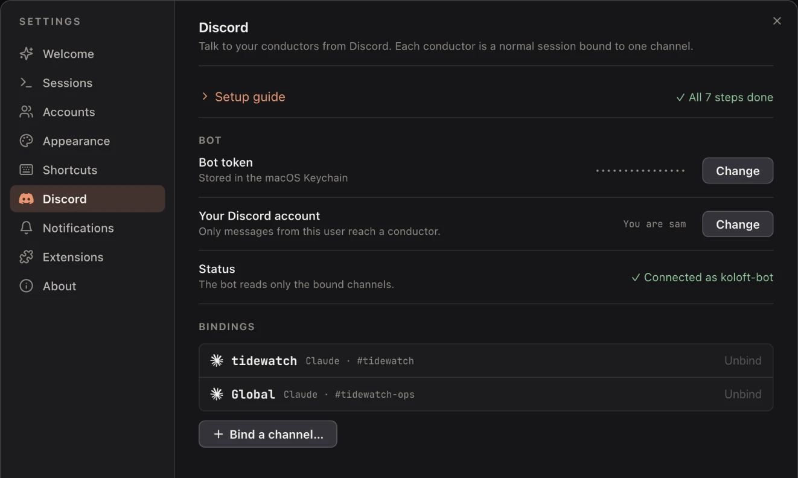
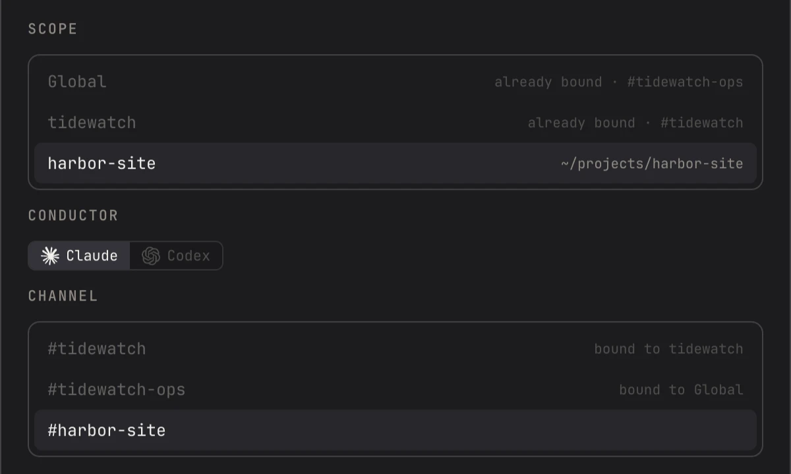
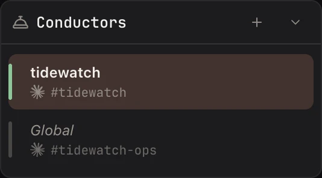

A butler on Discord
Discord is a chat app for your phone and your computer. A conductor is a normal Claude or Codex session on your Mac, tied to one Discord channel (a chat room). You write to the conductor from your phone. It starts your other sessions, reads them, sends them messages, and answers their questions the way you tell it to.
your phone
+-----------------------------+
| the Discord app |
+-----------------------------+
^ |
| v
Discord, on the internet
+-----------------------------+
| your private server |
| one channel per conductor |
| one thread per session |
+-----------------------------+
^ |
| v
your Mac
+-----------------------------+
| Koloft, signed in as your |
| bot with the bot's token |
| | | |
| channel thread |
| v v |
| conductor ---> the session |
+-----------------------------+
Nothing runs on a server of ours, and you make no account with us. The words travel through your own private bot. A bot is an account that a program uses, not a person. You make it on Discord, and Koloft signs in as it. Until you paste the bot's token, nothing connects.
Set it up
Open Settings ▸ Discord. Until you finish, it says "Discord is not set up yet." Click
Set up Discord… and a guide walks you through seven steps. When all are done
it says "✓ All 7 steps done".
- Make the app, on the Discord website. An app is Discord's box that holds a bot. Click Open Developer Portal (Discord's website for making apps), then New Application, and name it Koloft. The portal opens in your normal browser. Koloft's own browser gets "Missing Access" there.
- Make the bot private and let it read messages. First set Installation ▸ Install Link to None and save. Then turn Public Bot off, so only you can add it. Turn Message Content Intent on: that is Discord's switch that lets a bot read what you type.
- Copy the bot's token into Koloft. The token is the bot's password. Koloft keeps it in the macOS Keychain (the Mac's locked box for passwords) and never shows it again.
- Make a private server, in the Discord app. A server is your own space in Discord, with channels in it. Only you are in this one.
- Add the bot to your server. Click Invite the bot.
- Tell Koloft who you are. Send any message in your server, like "hi". It shows up in Koloft with the sender's name. Click This is me (or Not me).
- Make a channel and bind a conductor. Bind means tie the channel to a conductor. Click Bind a channel…, pick Global or a folder, Claude or Codex, then the channel.
After that, Settings ▸ Discord shows the bot token ("Stored in the macOS Keychain"), your Discord account ("Only messages from this user reach a conductor."), the status ("The bot reads only the bound channels."), and your bindings.

Bind a channel
Each binding makes two choices:
- Global or one folder. The Global conductor looks after every folder in the sessions list. A folder's conductor looks after that folder only. Each folder binds one channel, and Global binds one.
- Claude or Codex: which tool the conductor itself runs on.

There are three ways in:
- Settings ▸ Discord ▸
Bind a channel… -
right-click a folder ▸
Bind Discord channel…(there while that folder has no channel) - the
+on the Conductors block

The Conductors block sits in the sidebar, under the sessions list and above Notes. It shows up once you have a binding. Right-click a conductor there for a menu with:
- Open
- Change channel…
- Switch to Codex next time (or Claude)
- Start a fresh conductor
- Unbind
The conductor always runs on your Mac, even for a remote folder.
From your phone
#tidewatch (the channel)
🧵 fix flaky test
tidewatch · Claude
|
+-- thread: fix flaky test
❓ fix flaky test is waiting
for you.
Bash asks to run:
npm test
Answer with a button, or
write the answer here.
[ Yes ] [ No ]
after you press Yes, the
buttons go, and it ends:
✅ Yes
Talk to the conductor
Write in the bound channel. Your message reaches the conductor with "[Discord]" in front. It gets a ⏳ while it waits its turn, and a ✅ once it is in. If the conductor is not open, your first message starts it; the ⏳ stays until it is ready. Files you attach are saved on your Mac, and the conductor is told where they are.
One thread per session
A thread is a side chat that hangs off one message. Each session the conductor looks after gets its own. The channel shows one small card per session: its title, its folder, and Claude or Codex. Under that card, the session's thread holds its news: finished, waiting for you, closed, and the results of commands.
- Type in a thread, and it goes straight to that session. If the session is asking you something, your message is the answer.
-
The thread takes the session's title from the sidebar, and changes when the title does.
After
/clear, the session stays in the same thread. - When the session closes, its thread is put away (archived).
Buttons
When a session asks you something, its card has buttons:
- a question with one pick: "1. …", "2. …", one button per option
- a request to run a tool: Yes / No
- a plan: Approve / Reject
After you press one, the card says "✅" and the label you pressed. A question with several parts gets no buttons. See which sessions can take a typed answer below.
Slash commands
A slash command is a command you type that starts with /. Discord shows three
once a channel is bound in your server:
-
/run— type a command into a session, like/contextor/model haiku /clear— start a new conversation in a session/compact— shrink a session's conversation; you may say what to keep
Each has a session box that fills itself in as you type. Leave it out and the command goes
to the conductor, or, inside a thread, to that thread's session. A plain message that
starts with / runs where you typed it: in the channel, in the conductor; in a
thread, in that thread's session. A command waits until the conductor's turn ends, for up
to 10 minutes.
Files out
The conductor can send you files. It runs
koloft discord send <file>... -- "<text>", and the text part may
be left out. Each file can be up to 20 MB (megabytes). Discord takes 10 files and 25 MB
per message, so a bigger batch goes out as several messages.
What the conductor can do
It works through the koloft command, plus a few verbs only a conductor gets. In its folder, or in every folder for Global, it can:
- start, read, message, resume and stop sessions
- run a slash command in them, and see their screen
- answer their questions
- close the sessions it started
- list your folders (Global only)
It cannot:
- close a session it did not start (it can only stop it)
- touch scheduled jobs or notes, if it is the Global conductor or a remote folder's (a local folder's conductor can)
- give a session it starts more freedom than it has itself (that session skips permission checks only if the conductor does; otherwise it asks as usual)
The conductor itself uses your usual permission setting.
A message you send while Koloft is closed gets one answer: "Koloft was offline, this message was not delivered."
What Discord sees
Everything goes to Discord, at discord.com/api/v10 and
gateway.discord.gg, and files you attach come down from Discord's file
server. This is the text that leaves your Mac:
| what | what is in it |
|---|---|
| conductor replies | Every reply the conductor writes, whole, and its own question cards. |
| "finished" card | The session's full reply for that turn, if it arrives within 7 seconds; otherwise the card has no reply. |
| "waiting" card | The question and its options. For an approval: the command it wants to run, the plan, or for any other tool its whole input. So for an Edit or a Write, that is the file's text. |
| "closed" card | Only the session's name. |
| command results |
What /run, /clear or /compact printed, and
the reply after it.
|
| names | Session titles and folder names, on the cards and in thread names. |
| errors | A short note when something goes wrong. |
Long text is split into several messages, not cut short. Only a button label or a thread name gets cut.
- Never the whole transcript (the written record of a session): only what the cards above carry, and what the conductor writes.
- Only your account, picked in step 6, is heard. Other people and bots are ignored, and their commands and button presses refused.
- Discord still sends every message in the server to your Mac. Koloft drops the rest there, and none of it goes back out.
- In step 6, before you pick yourself, anyone's message in the server shows up in Koloft, so you can pick.
- "Waiting" and "closed" cards go out for every session in a bound folder (every folder, under Global), not only the conductor's.
- A "finished" card goes out once the conductor has touched that session, or once the session has a thread.
- A pasted token signs the bot in before you bind a channel. Until you bind one, it ignores messages and shows no slash commands.
Three kinds of session
Claude on your Mac
- Every kind of question can be answered from your phone.
- A question with several parts has no buttons. Reply in the thread with one line per question: a number, or your own answer.
- For a plan, you can also type what to change instead of yes.
Codex on your Mac
- Your messages wait in line, and go in when Codex is ready.
- Yes / No works, and so does one question that picks one option.
- Anything else, like several parts, free text or a secret, gets "Codex is asking something Koloft cannot answer from here… Answer this one at the Mac."
-
What Codex shows only on its screen is not read back. The conductor can look with
koloft session screen.
Claude on another machine
- Koloft answers by typing keys into its terminal. So it can answer Yes / No, or one question with one pick. A question with several parts, or with several picks, gets no buttons: answer that one at the Mac.
- A plan takes yes or no only.
- A file you attach is left out, and the session is told why: "this session runs on another machine". Your words still go in.
- What the conductor sends it waits until the session's turn ends. What you type in its thread goes in at once.
There is no fourth kind: Codex does not run on another machine.
What it won't do
-
post your whole transcript(one turn's reply and one tool's input do go out, as the cards above say) -
ring on start or close(the "started" and "closed" cards are silent) -
answer Codex forms(several parts, free text or secrets: answer at the Mac) -
run two Kolofts on one data folder(the second one waits for the bot; a Koloft on another Mac with the same token is not stopped, and both get every message) -
rename threads quickly(Discord's rule: two name changes in ten minutes)
next page -> Install, update, what it talks to